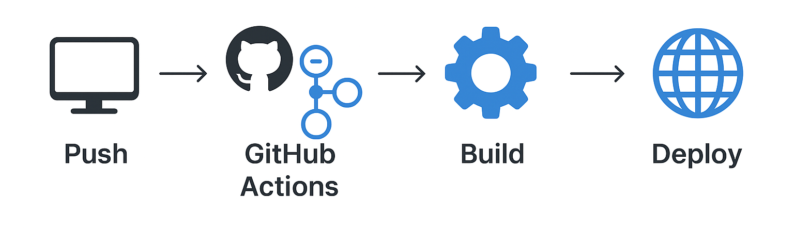

⚙️ Automate Everything: A Beginner's Guide to GitHub Actions

GitHub Actions is a powerful, integrated platform for automating your software workflows directly within your repository. This platform allows you to implement Continuous Integration (CI) and Continuous Delivery (CD), bringing core DevOps practices into the development lifecycle.
1. Core Concepts: The GitHub Actions Vocabulary
Understanding the terminology is the first step toward writing effective automation pipelines.
- Workflow: The full automated process, defined in a
.ymlfile. It's the entire pipeline (e.g., "Build, Test, and Deploy"). - Event: The specific activity that triggers a workflow (e.g., a
pushto a branch, apull_request, or a manualworkflow_dispatch). - Job: A set of steps that execute on a single **Runner** machine. Jobs can run in parallel or sequentially.
- Step: An individual task within a job. A step either runs a shell command (
run) or executes a reusable **Action** (uses). - Action: A reusable unit of code, often sourced from the GitHub Marketplace, that performs a complex task (e.g., setting up Python, deploying to AWS).
- Runner: The virtual machine (VM) that executes the workflow, usually provided by GitHub (e.g.,
ubuntu-latest).
2. Hands-On Practice: The Linter Workflow
We will create a foundational **Continuous Integration (CI)** pipeline to automatically check code quality using the Python linter, **Flake8**, whenever code is pushed.
Step 1: The Sample Files
Create two files in your repository: sample_script.py (intentionally flawed) and requirements.txt.
sample_script.py (Flawed Code)
# sample_script.py
def calculate_sum ( a, b ) :
# This code has linting errors (extra spaces, missing docstring).
c = a + b
return c
print(calculate_sum(5, 10))
requirements.txt
flake8
Step 2: Define the CI Workflow
Create the file .github/workflows/ci_linter.yml to define the automated process. This YAML file is the heart of your workflow, and here is a detailed breakdown of each major component:
1. Workflow Name: name: Python Code Quality Check (Linter)
Sets the display name for the workflow in the GitHub Actions tab.
2. Event Trigger: on: ...
Defines the **Event** that triggers the run. It runs every time code is pushed to the main branch, or if triggered manually (workflow_dispatch).
3. Jobs: jobs: run-linter: ...
Defines a single **Job** named run-linter. All steps below execute as part of this job.
4. Runner: runs-on: ubuntu-latest
Specifies the **Runner** (virtual machine) environment. ubuntu-latest is a reliable, GitHub-hosted Linux environment where the commands will execute.
5. Steps: The sequence of tasks the runner will execute:
-
Step 1: Checkout repository code (
uses: actions/checkout@v4) – This is an **Action** that downloads your repository code onto the runner machine so subsequent steps can access the files. -
Step 2: Set up Python environment (
uses: actions/setup-python@v5) – This **Action** sets up the necessary Python version environment (python-version: '3.x') on the runner. -
Step 3: Install dependencies (
run: pip install -r requirements.txt) – This uses the shell command (run) to install the linter tool, `flake8`, listed in our `requirements.txt` file. -
Step 4: Run Flake8 Linter Check (
run: flake8 .) – This executes the actual linter command across the entire code base (`.`). If `flake8` finds errors, it exits with a non-zero code, causing the entire step and the job to **Fail**.
Now, let's look at the full YAML file:
# .github/workflows/ci_linter.yml
# 1. Workflow Name
name: Python Code Quality Check (Linter)
# 2. Event Trigger
on:
push:
branches: [ main ]
workflow_dispatch:
# 3. Jobs
jobs:
run-linter:
# 4. Runner
runs-on: ubuntu-latest
# 5. Steps
steps:
- name: 1. Checkout repository code
uses: actions/checkout@v4
- name: 2. Set up Python environment
uses: actions/setup-python@v5
with:
python-version: '3.x'
- name: 3. Install dependencies
run: pip install -r requirements.txt
- name: 4. Run Flake8 Linter Check
run: flake8 .
Step 3: Run and Observe Failure
When you commit and push these files, the workflow will run and the "Run Flake8 Linter Check" step will **fail** because of the style errors in sample_script.py. This confirms the CI gate is working.
Step 4: Fix the Code and Rerun
Update sample_script.py locally to adhere to code standards:
sample_script.py (Fixed Code)
# sample_script.py
def calculate_sum(a, b):
"""Calculates the sum of two numbers."""
total = a + b
return total
print(calculate_sum(5, 10))
Commit and push the fix. The workflow will run again, and this time, all steps will **pass** successfully.
Summary
This simple setup provides the foundation for powerful DevOps automation. You can extend this workflow to include unit testing, security scans, or even full application deployment. GitHub Actions is your core tool for moving toward fully automated software delivery.